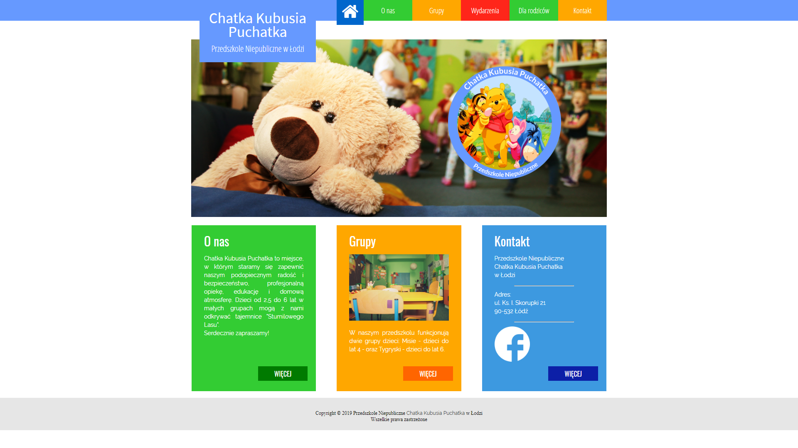

Skąd, po co i dlaczego?
"Chatka Kubusia Puchatka" to strona internetowa Niepublicznego Przedszkola w Łodzi, dostępna pod adresem chatkakubusiapuchatka.eu. Jest to projekt wykonany w ramach wolontariatu na rzecz tego przedszkola.
Jakie technologie?
Ta strona miała być z założenia pewnego rodzaju testem znajomości HTML5 i CSS3. Całość napisałam wyłącznie przy użyciu tych języków oraz elementów JavaScript oraz biblioteki jQuery. Na jej przykładzie bardzo dokładnie przestudiowałam UX\UI Design i starałam się ją tworzyć tak, aby byla przyjazna użytkownikowi.
Coś ciekawego
Celem tego projektu było szczegółowe zaplanowanie układu i skupienie się na dopracowanie strony pod względem wizualnym. Dlatego też pojawiło się tam wiele elementów ciekawych graficznie. Poniżej znajduje się fragment kodu obsługujący menu w sekcji "Grupy" dotyczącej wszystkich grup istniejących w przedszkolu.
Fragment ten odpowiada za ustawienie obok siebie kafelków, z których każdy odpowiada jednej grupie. W tym układzie, po najechaniu myszką na zdjęcie, ulega ono powiększeniu wewnątrz obszaru. Efekt ten można zobaczyć na stronie pod adresem chatkakubusiapuchatka.pl/grupy.
Jako ciekawostkę dodam, że jestem również autorką loga przedszkola oraz wszystkich zdjęć na stronie.